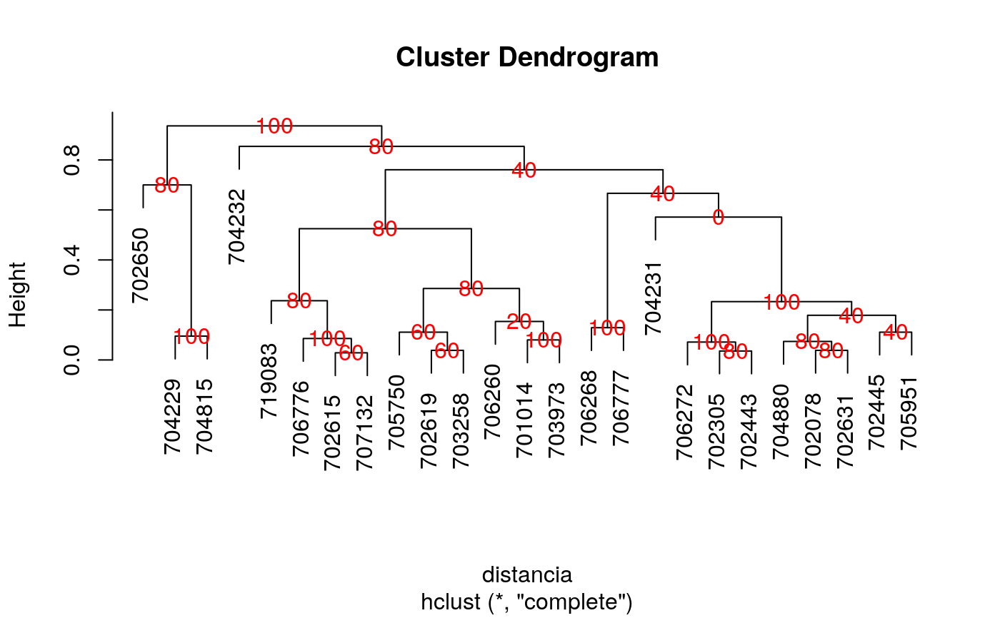
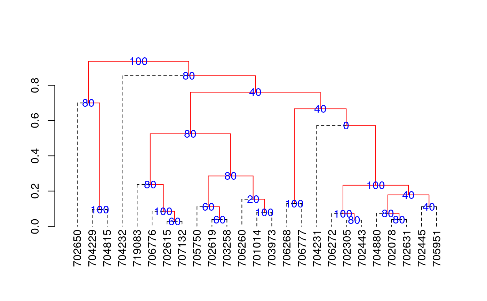
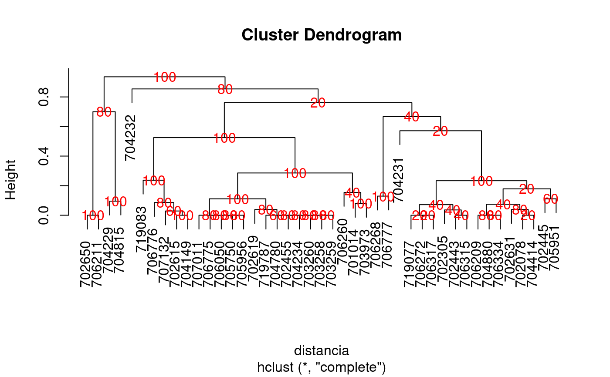

The criterion of the consensus is to produce many trees by means of boostrap and to such calculate the relative frequency with members of the clusters.
consensus( data, distance = c("binary", "euclidean", "maximum", "manhattan", "canberra", "minkowski", "gower", "chisq"), method = c("complete", "ward", "single", "average", "mcquitty", "median", "centroid"), nboot = 500, duplicate = TRUE, cex.text = 1, col.text = "red", ... )
Arguments
| data | data frame |
|---|---|
| distance | method distance, see dist() |
| method | method cluster, see hclust() |
| nboot | The number of bootstrap samples desired. |
| duplicate | control is TRUE other case is FALSE |
| cex.text | size text on percentage consensus |
| col.text | color text on percentage consensus |
| ... | parameters of the plot dendrogram |
Value
The groups and consensus percentage
The class object is hclust, dendrogram plot
Homonymous elements
Details
distance: "euclidean", "maximum", "manhattan", "canberra", "binary", "minkowski", "gower", "chisq". Method: "ward", "single", "complete", "average", "mcquitty", "median", "centroid". see functions: dist(), hclust() and daisy() of cluster.
References
An Introduction to the Boostrap. Bradley Efron and Robert J. Tibshirani. 1993. Chapman and Hall/CRC
See also
Examples
library(agricolae) data(pamCIP) # only code rownames(pamCIP)<-substr(rownames(pamCIP),1,6) output<-consensus( pamCIP,distance="binary", method="complete",nboot=5)#> #> Duplicates: 18 #> New data : 25 Records #> #> Consensus hclust #> #> Method distance: binary #> Method cluster : complete #> rows and cols : 25 107 #> n-bootstrap : 5 #> Run time : 0.6697083 secs #># Order consensus Groups<-output$table.dend[,c(6,5)] Groups<-Groups[order(Groups[,2],decreasing=TRUE),] print(Groups)#> groups percentage #> 5 3-4-21 100 #> 7 1-11 100 #> 8 6-22-24 100 #> 9 12-15 100 #> 12 20-23 100 #> 15 2-3-4-5-8-16-18-21 100 #> 24 1-2-3-4-5-6-7-8-9-10-11-12-13-14-15-16-17-18-19-20-21-22-23-24-25 100 #> 2 3-4 80 #> 3 2-8 80 #> 6 2-8-16 80 #> 16 6-22-24-25 80 #> 17 1-7-10-11-17-19 80 #> 18 1-6-7-10-11-17-19-22-24-25 80 #> 21 9-12-15 80 #> 23 1-2-3-4-5-6-7-8-10-11-13-14-16-17-18-19-20-21-22-23-24-25 80 #> 1 6-24 60 #> 4 7-10 60 #> 11 7-10-17 60 #> 10 5-18 40 #> 14 2-5-8-16-18 40 #> 20 2-3-4-5-8-13-16-18-20-21-23 40 #> 22 1-2-3-4-5-6-7-8-10-11-13-16-17-18-19-20-21-22-23-24-25 40 #> 13 1-11-19 20 #> 19 2-3-4-5-8-13-16-18-21 0#> [,1] #> [1,] "701014" #> [2,] "702078" #> [3,] "702305" #> [4,] "702443" #> [5,] "702445" #> [6,] "702615" #> [7,] "702619" #> [8,] "702631" #> [9,] "702650" #> [10,] "703258" #> [11,] "703973" #> [12,] "704229" #> [13,] "704231" #> [14,] "704232" #> [15,] "704815" #> [16,] "704880" #> [17,] "705750" #> [18,] "705951" #> [19,] "706260" #> [20,] "706268" #> [21,] "706272" #> [22,] "706776" #> [23,] "706777" #> [24,] "707132" #> [25,] "719083"# Other examples # classical dendrogram dend<-as.dendrogram(output$dendrogram) plot(dend,type="r",edgePar = list(lty=1:2, col=2:1))## Without the control of duplicates output<-consensus( pamCIP,duplicate=FALSE,nboot=5)#> #> Consensus hclust #> #> Method distance: binary #> Method cluster : complete #> rows and cols : 43 107 #> n-bootstrap : 5 #> Run time : 0.03551149 secs #>## using distance gower, require cluster package. # output<-consensus( pamCIP,distance="gower", method="complete",nboot=5)